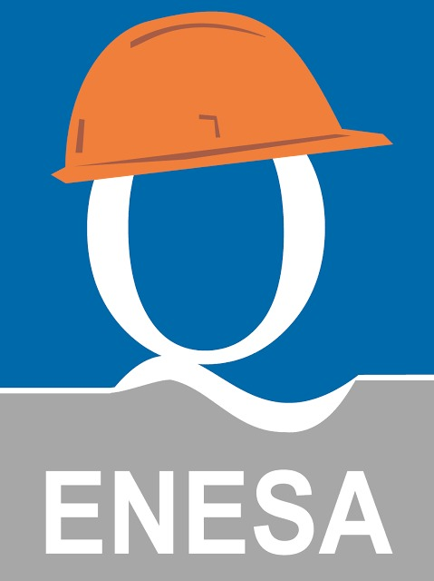
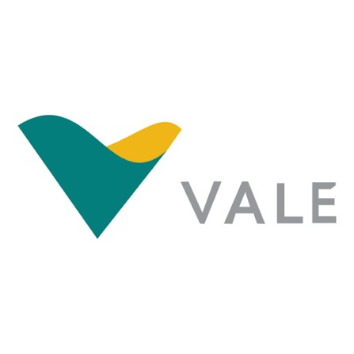

Lance os dados do sistema e do local. A página calcula o fator de queda, a zona livre de queda requerida e a força de impacto no trabalhador, com o desenho em escala.
Valores iniciais são exemplos. Troque pelos dados do seu equipamento e do posto de trabalho.
Queda vertical, sem efeito pêndulo.
Posição inicial (linha cheia) e posição após a retenção (tracejada). As faixas à direita somam o espaço livre necessário abaixo dos pés.
Resumo para consulta rápida. Confira sempre o texto vigente das normas.
Razão entre a distância de queda livre e o comprimento do elemento de ligação que vai deter a queda. Indica a severidade: quanto maior o FQ, maior a força transmitida ao corpo.
| FQ | Situação |
|---|---|
| menor que 1 | Ancoragem acima do D-ring; o talabarte cai com folga menor que o seu comprimento. |
| 1 | Ancoragem na altura do D-ring; a queda livre é igual ao talabarte. |
| 2 | Ancoragem nos pés; é o máximo possível e o caso mais severo. |
Espaço vertical entre a ancoragem e o obstáculo inferior mais próximo (piso, laje, estrutura). Se a ZLQ disponível for menor que a requerida, o trabalhador chega ao obstáculo antes de ser detido.
Com a ancoragem na altura do D-ring, isto vira a soma usual: talabarte + absorvedor + distância D-ring–pés + margem.
A força máxima de retenção transmitida ao corpo deve ficar em até 6 kN, cerca de 600 kgf. Em ensaios, talabarte sem absorvedor em FQ 2 passou de 20 kN.
m = massa, g = 9,81 m/s², s = distância de frenagem, k = rigidez (N/m). São estimativas teóricas; para projeto use os valores de ensaio do fabricante.
Ferramenta de apoio ao cálculo. Não substitui a análise de risco, o projeto do sistema de ancoragem por profissional habilitado nem os dados de ensaio do fabricante.